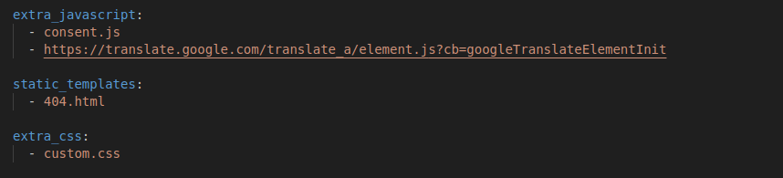
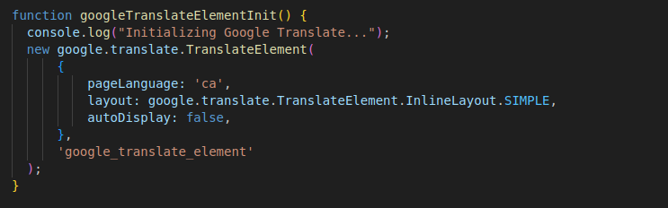
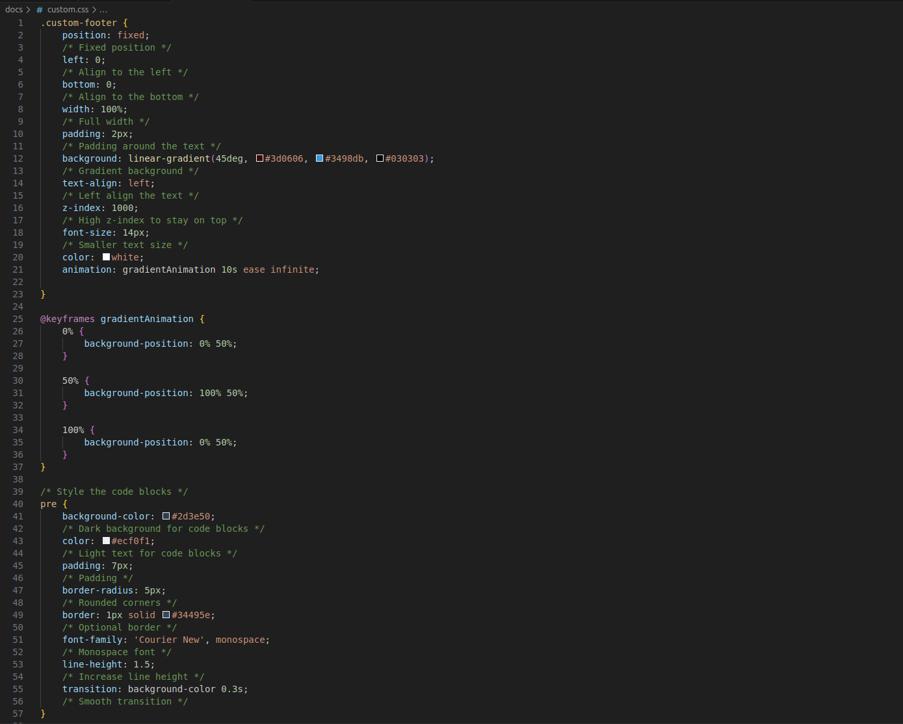
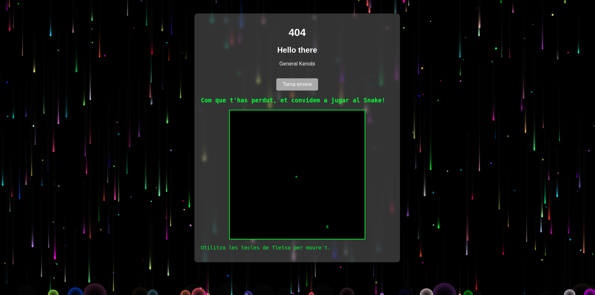
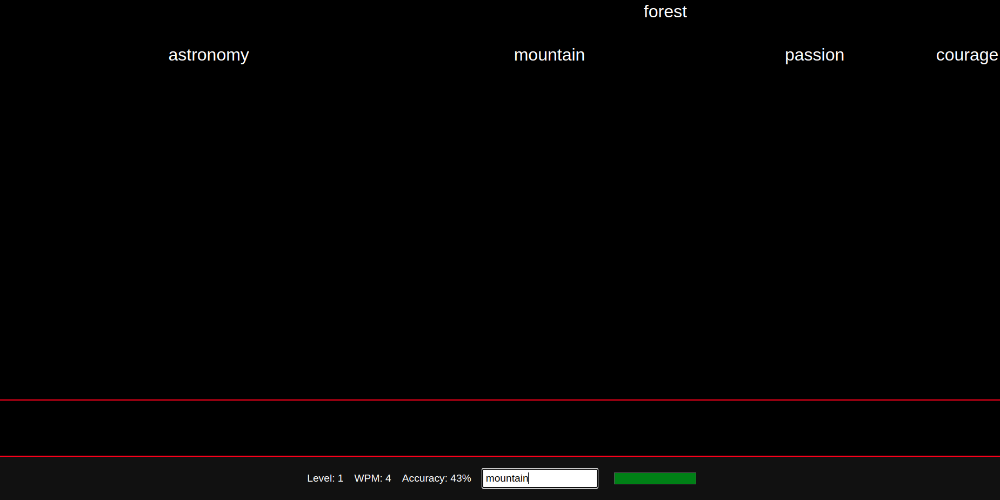
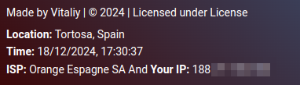

Welcome to Customizing Your MkDocs
Feel free to copy, adapt, and make use of my code and discoveries to enhance your MkDocs project.
Customization for Your MkDocs
Below is an example of a button that opens a modal popup displaying my YAML configuration code and instructions.
This approach keeps the page organized while providing detailed code samples. Users can click the button to view the code and learn where and how to implement it.
YAML Configuration Example
This YAML configuration defines the layout, theme, and features of your MkDocs site.
Where to Implement:
Place the following YAML configuration into your mkdocs.yml file, located in the root of your project, to achieve the same customizations.
YAML Configuration
Copy the following code into your mkdocs.yml file:
site_name: Virtualització
theme:
logo: linux-ethandud.gif
name: material
custom_dir: docs/custom
features:
- navigation.tabs
- navigation.sections
- toc.integrate
- navigation.top
- search.suggest
- search.highlight
- content.tabs.link
- content.code.copy
- content.code.download
- footer.hide
- palette.toggle
palette:
- scheme: default
primary: light blue
accent: red
toggle:
icon: material/weather-sunny
name: Switch to dark mode
- scheme: slate
primary: teal
accent: amber
toggle:
icon: material/weather-night
name: Switch to light mode
nav:
- Welcome: 'index.md'
- Per què triar Linux?: 'objectius.md'
- Typeracer: 'Typeracer.html'
- Sprint 1:
- "Instalació Inicial Usuari Avançat": 'instalacio_inicial.md'
- "Configuració Inicial": 'vbox.md'
- "Configuració de Xarxa": 'netplan.md'
- "Gestors D'arrancada": 'bootloaders.md'
- "Reparació d'inici": 'grub.md'
- "Creació d'una instantània del sistema": 'timeshift.md'
- "Comandes bàssiques": 'comandes.md'
- "Fixació de Paquets": 'packet.md'
- Sprint 2:
- "Fitxers Importants": 'fitx_importants.md'
- "Gestió d'Usuaris": 'gestio_usuaris.md'
- "Gestió de Processos": 'gestproces.md'
- "Permisos Especials i ACL": 'permisos_especials.md'
- "Aplicarció de Permisos Especial i ACL": 'aplicar.md'
- "Sistemes de Fitxers": 'sistemes_fitxers.md'
- "Gestió de Particions i Compartició de Recursos": 'particions.md'
- "Còpies de Seguretat i Automatitzacions de Tasques": 'copies_segur.md'
- "Quotes per a Usuaris i Grups": 'quotes_disc.md'
- Licència:
- "Llicència d'us": 'licencia.md'
- "Tipus de Llicències": 'tipus-licencia.md'
- Customize your MKDOCS: 'customize.md'
extra:
social:
- icon: fontawesome/brands/google
link: https://insebre.cat/
- icon: fontawesome/brands/facebook
link: https://www.facebook.com/pages/IES-de-lEbre/112464068780017/
generator: false
extra_javascript:
- consent.js
- https://translate.google.com/translate_a/element.js?cb=googleTranslateElementInit
static_templates:
- 404.html
extra_css:
- custom.css
Additional Tips
- The button is defined with standard HTML inside a Markdown file. MkDocs Material allows this by default.
- You can duplicate the button and modal sections for different code snippets. Just ensure you use unique IDs for each pair of modal and overlay.
- Adjust colors, fonts, and layout as needed in the CSS below.
Custom Button Code Showcase Example
In this section, we’re demonstrating a meta-example: a button that reveals its own source code including the HTML, CSS, and JS needed to create it. Clicking the button below will open a popup showing exactly how to create a button-triggered modal popup within a Markdown page.
The Button and Its Code
Click the button below to view the full source code (HTML, CSS, and JS).
Source Code for the Button, Modal, CSS, and JS
The code below shows how to place a button in Markdown that, when clicked, displays this popup modal. You can copy and modify it to suit your needs.
<!-- The button to open the modal -->
<button class="popup-button" onclick="showPopup('popupButtonCode', 'overlayButtonCode')">Show Button Source Code</button>
<!-- Overlay and Modal -->
<div class="overlay" id="overlayButtonCode" onclick="hidePopup('popupButtonCode', 'overlayButtonCode')"></div>
<div class="popup" id="popupButtonCode">
<span class="close-btn" onclick="hidePopup('popupButtonCode', 'overlayButtonCode')">×</span>
<h3>Source Code for the Button, Modal, CSS, and JS</h3>
<p>The code below shows how to place a button in Markdown that, when clicked, displays this popup modal. You can copy and modify it to suit your needs.</p>
<pre><code>
<!-- The button to open the modal -->
<button class="popup-button" onclick="showPopup('popupButtonCode', 'overlayButtonCode')">Show Button Source Code</button>
<!-- Overlay and Modal -->
<div class="overlay" id="overlayButtonCode" onclick="hidePopup('popupButtonCode', 'overlayButtonCode')"></div>
<div class="popup" id="popupButtonCode">
<span class="close-btn" onclick="hidePopup('popupButtonCode', 'overlayButtonCode')">×</span>
<h3>Source Code for the Button, Modal, CSS, and JS</h3>
<p>...Explanation text here...</p>
</div>
<style>
.popup-button {
background-color: #007bff;
color: white;
border: none;
padding: 10px 20px;
font-size: 16px;
cursor: pointer;
border-radius: 5px;
margin: 10px 0;
}
.popup-button:hover {
background-color: #0056b3;
}
.overlay {
display: none;
position: fixed;
top: 0; left: 0;
width: 100%; height: 100%;
background-color: rgba(0, 0, 0, 0.5);
z-index: 999;
}
.popup {
display: none;
position: fixed;
top: 50%; left: 50%;
transform: translate(-50%, -50%);
background-color: #2c2c2c;
border: 1px solid #444444;
box-shadow: 0 0 10px rgba(0,0,0,0.6);
padding: 20px;
z-index: 1000;
width: 80%;
max-width: 900px;
max-height: 80%;
overflow-y: auto;
color: #fff;
border-radius: 5px;
}
.popup .close-btn {
float: right;
cursor: pointer;
font-size: 18px;
color: #bbb;
margin-left: 10px;
}
.popup .close-btn:hover {
color: #fff;
}
pre code {
background: #1e1e1e;
color: #cfcfcf;
padding: 10px;
display: block;
overflow-x: auto;
white-space: pre;
font-family: Consolas, monospace;
}
</style>
<script>
function showPopup(popupId, overlayId) {
document.getElementById(popupId).style.display = 'block';
document.getElementById(overlayId).style.display = 'block';
}
function hidePopup(popupId, overlayId) {
document.getElementById(popupId).style.display = 'none';
document.getElementById(overlayId).style.display = 'none';
}
</script>
</code></pre>
</div>
Custom CSS/JS For the Whole SITE
You can also introduce site-wide customizations by adding your own custom.js and custom.css files. These files can be referenced directly in your mkdocs.yml configuration, allowing you to apply global JavaScript and CSS changes across your entire MkDocs site.
Note: Since MkDocs often uses styles from the Material or Bootstrap frameworks, you might occasionally need to use !important in your CSS rules to ensure your custom styles override the default theme.
Example mkdocs.yml Configuration:

Your custom.js file can contain features such as Google Translate integration or other enhancements (not shown in the image):

Your custom.css file includes CSS rules that apply to the entire site, ensuring a consistent and unified look:

Custom HTML Pages in MkDocs
You can integrate custom .html pages into your MkDocs project, allowing for highly tailored content beyond Markdown's capabilities. Below are two examples of custom HTML pages I’ve created and embedded within MkDocs.
Example 1: Custom 404 Page
This is a fully customized 404 page featuring a snake game, complete with a falling stars effect and a ripple animation.
You can view the page directly here:
Access 404.html

Example 2: Typeracer Game
This is a pure HTML/CSS/JS game where you race to type words correctly. Each correctly typed word disappears and increases your accuracy. The game includes penalties: - Wrong word: -5% HP. - Word reaches the red line: -10% HP.
There are also custom surprises in the gameplay!
You can try it out here:
Access Typeracer.html

CSS Showcase Example
Click the button below to view the custom CSS code snippet in a modal popup.
Custom CSS Code
Below is the CSS code snippet. You can copy and modify it as needed.
.custom-footer {
position: fixed;
/* Fixed position */
left: 0;
/* Align to the left */
bottom: 0;
/* Align to the bottom */
width: 100%;
/* Full width */
padding: 2px;
/* Padding around the text */
background: linear-gradient(45deg, #3d0606, #3498db, #030303);
/* Gradient background */
text-align: left;
/* Left align the text */
z-index: 1000;
/* High z-index to stay on top */
font-size: 14px;
/* Smaller text size */
color: white;
animation: gradientAnimation 10s ease infinite;
}
@keyframes gradientAnimation {
0% {
background-position: 0% 50%;
}
50% {
background-position: 100% 50%;
}
100% {
background-position: 0% 50%;
}
}
/* Style the code blocks */
pre {
background-color: #2d3e50;
/* Dark background for code blocks */
color: #ecf0f1;
/* Light text for code blocks */
padding: 7px;
/* Padding */
border-radius: 5px;
/* Rounded corners */
border: 1px solid #34495e;
/* Optional border */
font-family: 'Courier New', monospace;
/* Monospace font */
line-height: 1.5;
/* Increase line height */
transition: background-color 0.3s;
/* Smooth transition */
}
pre:hover {
background-color: #34495e;
/* Change background on hover */
}
.md-content {
text-align: justify;
}
/* Global image styling */
img {
width: 650px;
height: auto;
/* Maintain aspect ratio */
object-fit: cover;
/* Ensures the aspect ratio is maintained and the image fills the area */
transition: transform 0.3s ease, border 0.3s ease;
/* Smooth transition for transform and border */
border: 3px solid transparent;
/* Default border (transparent) */
border-radius: 3px;
/* Optional: rounded corners for the image */
}
/* Hover effect for all images except specific exceptions */
img:hover {
transform: scale(1.3);
/* Enlarges the image by 1.3x on hover */
border: 5px solid #3498db;
/* Adds a blue border on hover */
box-shadow: 0px 0px 15px rgba(52, 152, 219, 0.7);
/* Adds a glowing shadow effect */
}
/* Override styles for the footer image */
img.footer-img {
width: auto;
/* Use the natural size of the footer image */
height: auto;
/* Ensure natural height */
object-fit: unset;
/* Remove object-fit (no resizing or cropping) */
transition: none;
/* Disable any transitions on hover */
border: none;
/* Remove border for the footer image */
}
/* Optional: Add custom footer image styling */
img.footer-img {
margin-left: 5px;
/* Optional: keeps the same left margin */
vertical-align: middle;
/* Optional: ensures it stays vertically aligned with text */
}
/* Enllaços amb subratllat animat */
a {
position: relative;
text-decoration: none;
}
a::after {
content: "";
position: absolute;
left: 0;
bottom: -2px;
width: 100%;
height: 2px;
background-color: #3498db;
transform: scaleX(0);
transform-origin: bottom right;
transition: transform 0.25s ease-out;
}
a:hover::after {
transform: scaleX(1);
transform-origin: bottom left;
}
/* Ensure the inner content does not overflow */
.goog-te-gadget-simple {
width: 50% !important;
/* Fit the parent container */
max-width: 300px;
/* Set a maximum width */
height: auto !important;
/* Adjust height dynamically */
overflow: hidden;
/* Prevent content overflow */
text-align: center;
/* Center align text inside */
border-radius: 5px;
/* Optional: rounded corners */
padding: 5px;
/* Optional: internal padding */
}
/* Reduce the size of the language selection text and images */
.goog-te-gadget-simple span,
.goog-te-gadget-simple img {
max-height: 18px !important;
/* Reduce the height */
vertical-align: middle !important;
/* Align properly */
}
body {
top: 0 !important;
}
#goog-gt-tt {
display: none !important;
}
body>.skiptranslate>iframe.skiptranslate {
display: none !important;
visibility: hidden !important;
}
JavaScript Showcase Example
This example demonstrates a JavaScript script that retrieves and displays IP and location information using the ipwhois.app API. It also includes functionality to show a modal window with additional information when a button is clicked.
Click the button below to view the full JavaScript code and an explanation of what it does.

NOTE: You need to call this JavaScript somewhere in your code. In this example, it is called inside a footer using a
<div>element.
JavaScript Code Showcase
This script fetches the user's IP address, location, ISP, and local time from an external API and dynamically updates the page with this information. It also manages the visibility of a modal window triggered by the "About Me" button.
<script>
window.addEventListener('load', function () {
fetch('https://ipwhois.app/json/')
.then(response => response.json())
.then(data => {
const ip = data.ip || 'Unknown IP';
const city = data.city || 'Unknown City';
const country = data.country || 'Unknown Country';
const isp = data.isp || 'Unknown ISP';
const now = new Date().toLocaleString();
// Update the user info div
const userInfo = document.getElementById('user-info');
userInfo.innerHTML = `
<strong>Location:</strong> ${city}, ${country}<br>
<strong>Time:</strong> ${now}<br>
<strong>ISP:</strong> ${isp}<br>
And <strong>Your IP:</strong> ${ip}<br>
`;
})
.catch(error => {
console.error('Error fetching IP/location data:', error);
const userInfo = document.getElementById('user-info');
userInfo.innerHTML = 'Failed to load your IP and ISP information.';
});
});
document.getElementById('about-me-button').addEventListener('click', function() {
document.getElementById('about-me-modal').style.display = 'block';
document.getElementById('modal-overlay').style.display = 'block';
});
document.getElementById('close-modal').addEventListener('click', function() {
document.getElementById('about-me-modal').style.display = 'none';
document.getElementById('modal-overlay').style.display = 'none';
});
document.getElementById('modal-overlay').addEventListener('click', function() {
document.getElementById('about-me-modal').style.display = 'none';
document.getElementById('modal-overlay').style.display = 'none';
});
</script>